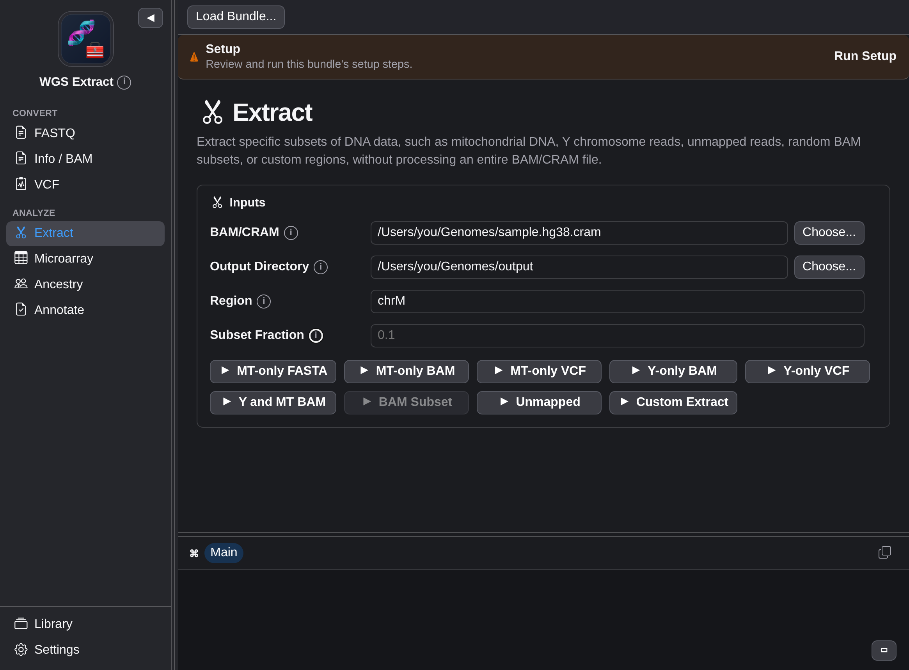

WGS Extract GUI
End users: Looking for how to use the WGS Extract desktop app? Start with the User Documentation (rendered web docs). This README and
devdocs/are oriented toward developers, bundle authors and packagers.
WGS Extract GUI turns a portable CLI-tool bundle into an installable desktop app for Windows, macOS, and Linux. It is one TypeScript app: a Web UI and a local Node backend, packaged as a native desktop app with Tauri.

The first real app built with WGS Extract GUI is the WGSExtract interface in examples/WGSExtract. It exercises setup steps, long-running commands, dynamic data sources, localization, configuration, terminal output, file pickers, and release packaging against a realistic genomics workflow.
This folder is part of the wgsextract-cli repository: the app ships in the same vX.Y.Z release as the CLI it bundles (see releasing), and the root's just gui-* recipes run the commands below from anywhere in the repository. Its history up to the move is in the former gui-for-cli repository too, with app releases up to v0.6.6.
Earlier work, including the SwiftUI macOS app, the Swift CLI, Electron and a dozen experimental renderers, and the benchmarks across them, is preserved on the old-experimental branch.
The built-in genome viewer opens indexed local BAM, CRAM and VCF/gVCF files offline. You can opt into remote viewing through the desktop backend; it retains the server token and proxies selected file ranges.
Layout#
| Path | Contents |
|---|---|
app/shared | Runtime shared by client and server: rendering, localization, types. |
app/web/src/server | Node backend: bundle loading, setup, action execution, config. |
app/web/src/client | Browser UI. |
app/web/packagers/tauri | Tauri desktop shell (Rust): window, menus, native pickers, updater. |
examples/ | Example bundles. |
resources/ | Built-in localized strings and icon map. |
docs/ | End-user guides (user README), privacy guide, genome viewer, gene page, and changelog. |
devdocs/ | Developer documentation (developer index): architecture, setup, distribution, job server, prerequisites, result documents, and JSON Schemas (devdocs/schema/). |
tools/, scripts/ | Python repo tooling: task runner, packaging, localization lint, site builder. |
mockups/ | Redesign mockups, design system and icons for review (make mockups); not part of the app. See mockups/README.md. |
Requirements#
- Node.js 22 or newer.
- Python 3.11 or newer for repository tooling (uv recommended).
- Rust/Cargo and the Tauri prerequisites for your OS to build the desktop app.
make setup (Windows: powershell -ExecutionPolicy Bypass -File .\make.ps1 setup) bootstraps missing user-level tools, installs locked dependencies, and runs a quick Web UI smoke test. It never elevates or installs system packages. See developer setup for manual OS prerequisites, the change-to-PR loop, and an AI-agent walkthrough.
Getting started#
make setup # user tools, locked deps, smoke test
make precheck # verify the toolchain
make run # serve the Web UI at http://127.0.0.1:8787 with examples/WGSExtract
make tauri # run the desktop app in dev modeOn Windows, use powershell -ExecutionPolicy Bypass -File .\make.ps1 <target> with the same target names; no machine execution-policy change is needed.
make run and make dev take BUNDLE=<path> and PORT=<port>:
make dev BUNDLE=examples/GitHelper PORT=9000Common commands#
| Command | Purpose |
|---|---|
make run | Build and serve the Web UI in a browser. |
make dev | Serve the Web UI with TypeScript watch and server reload. |
make tauri | Run the Tauri desktop app in dev mode. |
make build / make build-tauri | Compile the Web UI / build the desktop app. |
make lint | Typecheck, validate example bundles, lint locales, compile Python tooling, check duplication. |
make test | Run TypeScript and Python tooling tests. |
make ci | Lint and test, as CI does. |
make package | Build Tauri distributables for this host into out/release/tauri/. |
make package-windows-cross | Cross-build the Windows installer from macOS or Linux. |
make site | Regenerate the static project site into site/ from site_src/. |
Development targets run through tools/tasks.py, so uv run python tools/tasks.py <action> [target] works too.
Bundles#
A bundle is a folder containing manifest.json, page files, scripts, and assets. Pass its path with BUNDLE=<path>; it defaults to examples/WGSExtract. The path can also be a manifest.json file or a .zip, .tar, .tar.gz/.tgz archive whose root, or single top-level folder, holds manifest.json (a gzipped manifest.json.gz works too). Archives are extracted to a cache under the system temp folder.
Every load checks the manifest and pages against the rules in devdocs/schema, the setup steps' platform script folders, and tool version files. Check bundles without starting the app:
npm --prefix app run bundle:validate -- examples/WGSExtract path/to/bundle.zipBundles can include strings.toml and strings.<language-code>.toml localization tables next to manifest.json. Schema files live in devdocs/schema/manifest.schema.json and devdocs/schema/page.schema.json.
Actions can also run as cancellable jobs on a local server that the bundle declares; see job servers. Commands that describe their run in a JSON result document get their outputs, warnings and metrics shown from it; see result documents. A bundle can check, before an action runs, for data it needs that isn't installed and offer to install it; see prerequisites. A data source can map what a command prints to the payload it shows with a module in the bundle; see data sources.
Run a bundle's action test plans with:
npm --prefix app run bundle:test -- --helpConfiguration#
The app keeps its own data in a WGSExtract-gui folder in the platform Application Support directory: ~/Library/Application Support/WGSExtract-gui on macOS, %LOCALAPPDATA%\WGSExtract-gui on Windows, ~/.local/share/WGSExtract-gui (or under $XDG_DATA_HOME) on Linux. Bundles reach it as {{appData}}, and their scripts as $WGSEXTRACT_GUI_APP_DATA. It holds the app's settings.json and the WGS Extract CLI that setup installs (runtime/wgsextract-cli, with its bin/wgsextract launcher). The CLI stays there wherever the app itself is installed, since the app's install folder is replaced on every update and often isn't writable. A development run (make run, make tauri, npm run dev, or any server not started by the installed app) uses a WGSExtract-gui-dev folder instead, with its own runtime, bundle workspace and settings, so running a checkout never replaces the installed app's copy of the bundle or its CLI. It also keeps its own users workspace, ~/wgs-extract-dev, so the two never share a settings file, reference library or outputs. Set WGSEXTRACT_GUI_APP_DATA_NAME to use a different folder name for isolated tests or scripts. The desktop app's webview data and logs are in a separate folder named for its identifier, dev.wgsextract-gui (dev.wgsextract-gui.dev under make tauri).
Apps up to 0.8.6 kept their settings in a dev.guiforcli.web.embed.wgsextract folder and the CLI in the workspace's runtime folder. On its first launch, a newer app moves the settings over, removes that folder, and offers setup again. Once setup has installed the CLI in the new place, it deletes the copy in the workspace.
WGS Extract keeps two workspaces:
{{usersWorkspace}}, the users workspace, defaults to~/wgs-extract(%USERPROFILE%\wgs-extracton Windows). It holds the settings file (config.toml) and the folders you manage: the My Genomes library (mygenomes/), and, since the app installed the CLI, the Reference Data and Reference Genomes libraries and the temporary folder. These folders can become very large, so they are kept visible and in your own space. A standalone WGS Extract CLI uses the same folder, so the two share their settings and libraries. A bundle sets it withdefaultUsersWorkspacein its manifest; without one,{{usersWorkspace}}is the bundle workspace.{{bundleWorkspace}}, the bundle workspace, is the app's own: its copy of the bundle, its saved state and the run logs, in the app's data folder (%LOCALAPPDATA%\WGSExtract-gui\BundleWorkspaces,~/Library/Application Support/WGSExtract-gui/BundleWorkspaces,~/.local/share/WGSExtract-gui/BundleWorkspaces). You never need to move it; Open Bundle Workspace on the Settings page shows it.
Outputs default to a wgse folder beside each command's input BAM, CRAM, FASTQ, VCF or microarray file from the lab (in that order, when it reads several), or beside an input already in a wgse folder; the lab's own folder is treated as immutable, gaining only the indexes that must sit beside their files. Only Advanced mode can set an Output Directory override in the GUI. Basic mode hides and ignores advanced-only GUI overrides without changing their saved values; a default configured for the CLI still applies when the CLI reads that config.
Releases 0.8.5 to 0.8.7 kept everything in ~/wgs-extract. On its first start, a newer app makes that folder (including a previously moved workspace) the users workspace: your settings file, libraries and outputs stay there, and the app's copy of the bundle and its state move to the bundle workspace. Existing datasets libraries stay put so saved input paths remain valid. Releases before 0.8.5 kept the workspace in the app's data folder: the settings file moves to the users workspace, and the folders it names stay where they are until you move them. The standalone CLI follows the desktop's workspace location record, including suffixed defaults, unless it already has a legacy CLI config. If both configs exist, the CLI keeps its legacy file and warns with both paths; use --config PATH to choose explicitly.
WGSEXTRACT_GUI_USERS_WORKSPACE and WGSEXTRACT_GUI_CLI_INSTALL are internal bundle-script inputs supplied by the app, not user configuration options. Persistent folder choices belong in Settings or config.toml.
The desktop package includes production Node dependencies, including the TOML parser, beside app/dist; end users do not need npm or a development node_modules tree.
On Windows, setup installs WGS Extract's tools (its Pixi environments) for the current Windows account in %LOCALAPPDATA%\WGSExtractPixi, outside the workspace. If they aren't there, the pages say so; run Setup again. This happens when setup ran under another account, or was started from an app that Windows keeps apart from the rest of AppData\Local, such as an MSIX-packaged app. It also happens when that folder was deleted.
The app never takes over a folder of yours. If ~/wgs-extract already exists and isn't a WGS Extract workspace (or is a file, or a folder the app can't read), the app uses ~/wgs-extract-2 instead, or the next free name. It records that folder in its settings.json, so the users workspace stays there. If the folder chosen in Settings holds such a folder, the app doesn't start. It reports the folder: move that folder away, or remove it from usersWorkspaces in the app's settings.json to go back to the default location.
To move the users workspace, for example to a larger or faster drive, choose a Users Workspace Folder under Users Workspace Location on the Settings page and click Move. Everything in it moves with it, and paths shown under {{usersWorkspace}} follow, while folders you set elsewhere stay where they are. Changing one folder under Users Workspace Settings (a library, the temporary or run log folder, or an Output Directory) asks whether to move what is in it too, so you can put each on the disk that suits it.
A setting-folder move cannot move the users workspace, the bundle or its source, or a folder containing any settings editor's config file. Use Users Workspace Location to move the workspace as a whole; Change Setting Only never moves or deletes existing contents.
Changing a bound library folder on My Genomes or Library opens the same Move / Change Setting Only / Cancel dialog on that page, in Basic and Advanced; it never requires opening the Settings editor.
The move dialog receives keyboard focus, traps Tab/Shift+Tab and supports Escape cancellation, returning focus to the initiating control. Workspace roots that are symlink or junction aliases of the same physical directory are refused before migration, preserving saved state.
Uninstalling removes the bundle workspace with the app, but asks before deleting the users workspace, wherever it is, since its libraries may be shared. Folders the settings file names inside the app's data folder (an older install's libraries) are kept the same way. A silent Windows uninstall keeps them all. So does the quick-uninstall script published with each Windows release.
Distribution#
make package builds the macOS .app/.dmg, the Linux .deb/.rpm/.pkg.tar.zst/.AppImage, or the Windows NSIS installer, depending on the host. Packaging defaults to the bundled WGSExtract app; set packaging.embedded_bundle_path and packaging.app_name in .devconfig.toml to package a different bundle.
Tagged releases build on all three OSes in GitHub Actions, sign and notarize the macOS app, and publish a Tauri updater feed. See devdocs/distribution.md for signing, notarization, and self-updates.